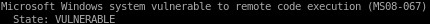

nmap vuln
nmap --script vulns 10.10.10.4
nmap is showing legacy is vulnerable to BOTH MS08-067 aka netapi

and ms17-010 aka eternal blue
both exploits are infamous as to how well they work against their targets, so its up to personal preference which one you would like to use here